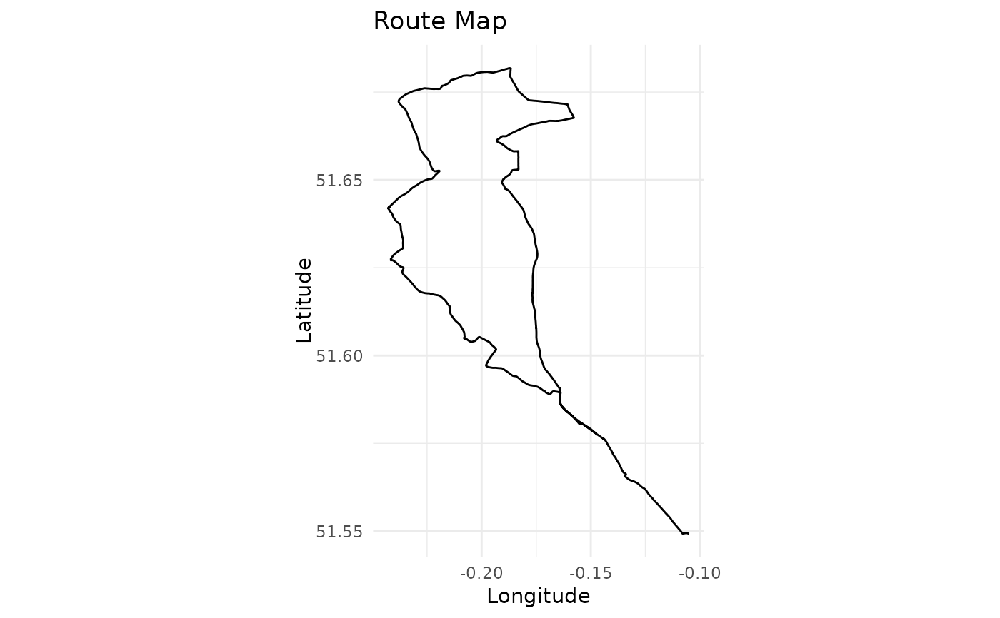

Analyse GPX File
analyse_gpx.RdProcesses a GPX file to extract route information, calculate metrics such as distance and elevation, and provide summary statistics or visualization.
Arguments
- gpx_path
Character string specifying the path to the GPX file or a web link to a route on Strava or RideWithGPS.
- return
Character string indicating the type of output to return. Options are:
"stats" (default): Returns a list of summary statistics
"plot": Generates a plot of the route and elevation profile. Supports additional modes via the
plot_route()function (e.g., "ggplot" or "leaflet")."data": Returns the processed track points data
- plot_mode
Character string. The plotting mode to use when
return = "plot". Options are:"ggplot" (default): Uses ggplot2 for visualisation.
"leaflet": Uses the leaflet package to create an interactive map.
Value
Depending on the return parameter:
If "stats": A named list of route statistics
If "plot": Generates a plot
If "data": A data frame of processed track points with calculated metrics
Details
If a web link is provided for gpx_path, the function will automatically
construct the appropriate GPX export URL, download the file to a temporary location,
and process it.
Examples
if (FALSE) { # \dontrun{
# Get route statistics from a local GPX file
stats <- analyse_gpx("path/to/file.gpx")
# Get route statistics from a Strava link
stats <- analyse_gpx("https://www.strava.com/routes/3193200014155699162")
# Get route statistics from a RideWithGPS link
stats <- analyse_gpx("https://ridewithgps.com/routes/39294504")
} # }
# Use the example GPX file included in the package
example_gpx_path <- system.file("extdata", "icc_intro_ride.gpx", package = "gpxtoolbox")
# Analyse the example GPX file
stats <- analyse_gpx(example_gpx_path)
#> Reading GPX file: /home/runner/work/_temp/Library/gpxtoolbox/extdata/icc_intro_ride.gpx
print(stats)
#> $total_distance_km
#> [1] 42.81
#>
#> $total_elevation_gain_m
#> [1] 622.2
#>
#> $total_elevation_loss_m
#> [1] 556.6
#>
#> $max_elevation_m
#> [1] 143
#>
#> $min_elevation_m
#> [1] 29.9
#>
#> $start_point
#> [1] "The Gatehouse, Fieldway Crescent, Canonbury, Highbury, London Borough of Islington, London, Greater London, England, N5 1PZ, United Kingdom"
#>
#> $end_point
#> [1] "Archway Road, London Borough of Haringey, London, Greater London, England, N6 4EJ, United Kingdom"
#>
#> $p25_point
#> [1] "Highwood Hill, Mill Hill, London Borough of Barnet, London, Greater London, England, NW7 4HN, United Kingdom"
#>
#> $p50_point
#> [1] "36, Camlet Way, Hadley Wood, London Borough of Enfield, London, Greater London, England, EN4 0LJ, United Kingdom"
#>
#> $p75_point
#> [1] "Lincoln Road, Colney Hatch, London Borough of Barnet, London, Greater London, England, N2 9DJ, United Kingdom"
#>
# Generate a plot of the example GPX file
analyse_gpx(example_gpx_path, return = "plot")
#> Reading GPX file: /home/runner/work/_temp/Library/gpxtoolbox/extdata/icc_intro_ride.gpx

